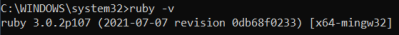
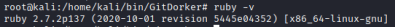

Ruby
Installation
• Windows:
◇ Install
http://rubyinstaller.org/
◇ check version:
ruby -v

• Linux:
◇ Install:
apt
install
ruby
◇ check version:
ruby -v

• MacOs:
◇ Install:
brew
install
ruby
◇ check version:
ruby -v
• Online Interpreter:
◇
https://try.ruby-lang.org/
Learn Ruby:
• Coming from other Languages:
https://www.ruby-lang.org/en/documentation/ruby-from-other-languages/
◇ Python →
https://www.ruby-lang.org/en/documentation/ruby-from-other-languages/to-ruby-from-python/
Bibliography:
https://ruby-doc.org/core-3.0.0/String.html